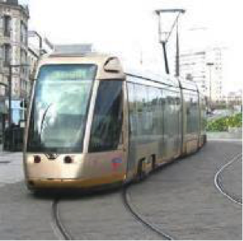
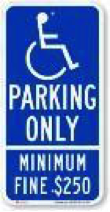
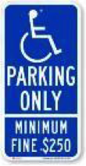
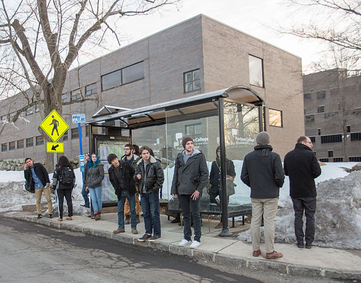
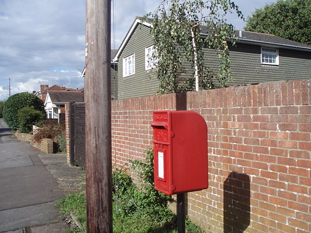

Instructions
Annotation Standard
1. Labeling Policy
Labeled foreground objects must never have holes, i.e. if there is some background visible 'through' some foreground object, it is considered to be part of the foreground. This also applies to regions that are highly mixed with two or more classes: they are labeled with the foreground class. Examples: tree leaves in front of house or sky (everything tree), transparent car windows (everything car).
2. Total Class 40
With reference to: cityscape, there are some newly added classes.
| Category | Class |
|---|---|
| Flat | road, sidewalk, parking, rail track |
| Human | person, rider |
| Vehicle | car, truck, bus, on rails, motorcycle, bicycle, caravan, trailer |
| Construction | building, bus stop, wall, fence, guard rail, bridge, tunnel, garage |
| Object | banner, billboard, fire hydrant, lane divider, mail box, parking sign, pole, polegroup, street light, traffic cone, traffic device, traffic light, traffic sign, traffic sign frame, trash can |
| Nature | vegetation, terrain |
| Sky | sky |
| Void | dynamic, static, ground, ego vehicle |
2.1 Road
Road：Part of ground on which cars usually drive, i.e. all lanes, all directions, all streets. Including the markings on the road. Areas only delimited by markings from the main road (no texture change) are also road, e.g. bicycle lanes, roundabout lanes, or parking spaces. This label does not include curbs.
2.2 Sidewalk
Sidewalk: Part of ground designated for pedestrians or cyclists.
Delimited from the road by some obstacle, e.g. curbs or poles
(might be small), not only by markings. Often elevated compared
to the road. Often located at the sides of a road. This label
includes a possibly delimiting curb, traffic islands (the
walkable part), or pedestrian zones (where usually cars are not
allowed to drive during day-time).
As shown in the second picture below,
sidewalk in the middle of the road is still sidewalk.

2.3 Parking
Parking lots and driveways. Not for regular driving, but rather to park a vehicle. Different texture than road. In ambiguous cases where the driveway is not separated from the sidewalk (e.g. a building entrance), labeled as sidewalk.

The second image should be considered sidewalk.
2.4 Rail Track
All kind of rail tracks that are non-drivable by cars, e.g. subway and train rail tracks, while tram rail tracks are usually drivable by cars and therefore part of road.

2.5 Person
A human that satisfies the following criterion. Assume the human moved a distance of 1m and stopped again. If the human would walk, the label is person, otherwise not. Examples are people walking, standing or sitting on the ground, on a bench, on a chair. This class also includes toddlers, someone pushing a bicycle or standing next to it with both legs on the same side of the bicycle. This class includes anything that is carried by the person, e.g. backpack, but not items touching the ground, e.g. trolleys.

2.6 Rider
A human that would use some device to move a distance of 1m. Includes, riders/drivers of bicycle, motorbike, scooter, skateboards, horses, roller-blades, wheel-chairs, road cleaning cars, cars without roof. Note that a visible driver of a car with roof can only be seen through the window. Since holes are not labeled, the human is included in the car label.
2.8 Truck
Truck, box truck, pickup truck. Including their trailers. Back part / loading area is physically separated from driving compartment.
2.9 Bus
Bus for 9+ persons, public transport or long distance transport.
2.10 On Rails
Vehicle on rails, e.g. tram, train.

2.11 Motorcycle
Motorbike, moped, scooter without the driver (that's a rider, see above).


2.12 Bicycle
Bicycle without the driver (that's a rider, see above).

2.13 Caravan
Like truck, but back is primarily for living/sleeping. Including caravan trailers.
2.14 Trailers
Trailers typically pulled by cars. Note that truck trailers are labeled truck, caravan trailers caravan, bicycle or horse trailers dynamic.


In the first image: the trailer is towed by car, so it's trailer. The second one should be labeled as truck.


caravan


Horse trailer and bicycle trailer: dynamic.
2.15 Building
Building, skyscraper, house, bus stop building, garage, car port. If a building has a glass wall that you can see through, the wall is still building. Includes scaffolding attached to buildings.
2.16 Wall
Individual standing wall. Not part of a building.
2.17 Fence
Fence including any holes.
2.18 Guard Rail
All types of guard rails/crash barriers.
2.19 Bridge
Only the bridge. Fences, people or vehicles on top are labeled separately.
2.20 Tunnel
Tunnel wall and 'the dark'. No vehicles.
2.21 Garage

2.22 Pole
Small mainly vertically oriented pole. E.g. sign pole, traffic light poles. If the pole has a horizontal part (often for traffic light poles) this part is also considered pole. If there are things mounted at the pole that are neither traffic light nor traffic sign (e.g. street lights) and that have a diameter (in pixels) of at most twice the diameter of the pole, then these things might also be labeled pole. If they are larger, they are labeled static.
2.23 Pole Group
Multiple poles that are cumbersome to label individually. This label is ok to use, if the gap between two poles has at most as many pixels width as a single pole.
2.24 Traffic Sign
Sign installed from the state/city authority, usually for information of the driver/cyclist/pedestrian in an everyday traffic scene, e.g. traffic- signs, direction signs - without their poles. No ads/commercial signs. The front side and back side of a sign containing the information. Note that commercial signs attached to buildings become building, attached to poles or standing on their own become billboard.


2.25 Traffic Light
The traffic light box without its poles.
2.26 Banner

2.27 Billboard


2.28 Street Light
As labeled in the second picture, only the light parts should be labeled as street light, the rest of the pole part should be labeled as pole.

2.29 Traffic Device
speed camera and other non-signal devices.
2.30 Lane Divider

2.31 Traffic Sign Frame

2.32 Parking Sign

 

2.33 Traffic Cone

2.34 Vegetation
Tree, hedge, all kinds of vertical vegetation. Plants attached to buildings are usually not annotated separately and labeled building as well. If growing at the side of a wall or building, marked as vegetation if it covers a substantial part of the surface (more than 20%).
2.35 Terrain
Grass, all kinds of horizontal vegetation, soil or sand. These areas are not meant to be driven on. This label includes a possibly delimiting curb. Single grass stalks do not need to be annotated and get the label of the region they are growing on.

2.36 Sky
Open sky, without leaves of tree. Includes thin electrical wires in front of the sky.
2.37 Ground
All other forms of horizontal ground-level structures that do not match any of the above. For example areas that cars and pedestrians share all-day, roundabouts that are flat but delimited from the road by a curb, elevated parts of traffic islands, water. Void label for flat areas.
2.38 Dynamic
Things that might not be there anymore the next day/hour/minute: Movable trash bin, buggy, bag, wheelchair, animal.
2.39 Static
Clutter in the background that is not distinguishable. Objects that do not match any of the above. For example, visible parts of the ego vehicle, mountains, street lights. Also rather small regions in the image that are some of the classes above, but that are cumbersome to label precisely might be annotated static.
2.40 Bus Stop
A bus stop is a designated place where buses stop for passengers to board or alight from a bus.
2.41 Mail Box
A physical box into which members of the public can deposit outgoing mail intended for collection by the agents of a country's postal service. The term can also refer to a private letter box for incoming mail.
2.42 Fire Hydrant
A connection point by which firefighters can tap into a water supply.

Explanation
3.1 Single instance annotations are available. However, if the boundary between such instances cannot be clearly seen, the whole crowd/group is labeled together and annotated as group, e.g. car group.
3.2 This label is not included in any evaluation and treated as void (or in the case of license plate as the vehicle mounted on).
3.3 Objects that are smaller than 50X50 pixel can be ignored.
Basic Options
The mode transition can be described in this image:

And there are some examples, the top images are good, while the bottom are bad.
1. Click next button ">>" to work on the next image and click "<<" to go back to the previous one. You can not submit your task before you finish the last image.
2. When you finish your task, click the button "Submit" on top right and your submission will be stored.
3. Click "Hide Label" button (or press "L(l)") in the control box to hide categories of regions. Click/press it again to show.
4. Select an annotated region by Double Click, and Double Click the background image to cancel selection. You can change the selection by double click other region. Once a region is selected, you can change its category, resize or delete. DO NOT USE SINGLE CLICK TO SELECT, or you will draw a new region.
5. Move your mouse onto a vertex, when it turns bigger and green, then press "ESC" or "DELETE" to delete a vertex. Otherwise, the deletion is invalid. You can also press "ESC" to remove the whole object that you are drawing, and use "DELETE" to remove a latest vertex.
6. Clicking "Magnify" Button (or press "M(m)"), you can annotate small regions with the help of a magnifier. Click (press) again to remove it.
7. Move your mouse onto a midpoint of one straight edge, when it turns bigger and orange, press "B(b)" to change this edge to a Bezier Curve. You can drag the control points to adjust its shape.
8. If points are too dense and annoying, press "H(h)" to hide midpoints when hovering on a region.
9. Click "+/-" or press PageUp/PageDown to zoom.
10. If an object is separated by others, use "Link" button to link these regions, so that they can have the same instance.
11. If you want to obtain part of the border of an existed object, press "S/s" when drawing or before drawing, and then click two endpoints on the border. After that, you can continue drawing and clicking. Thus the object can share border with what you are drawing. It's less time consuming.
Draw Polygon
1. You can draw a polygon using many single clicks. The positions of your clicks form the vertices.
2. When you want to finish drawing, move your mouse to the first vertex (where you started). You will notice the it becomes green and bigger, then make a click right there and a close path will be formed.
Resize and Add New Vertex
Resize
1. You can drag vertices to resize a region's shape. When you move your mouse onto a vertex, it will turn green and bigger. If your mouse leaves, it will recover. So try not to move your mouse after seeing this phenomenon.
2. Make a click on "the big green vertex" but keep your mouse down; and then drag the vertex to where you want.
Add Vertex
1. When you hover onto a region, some other points (not only the vertices) are shown. They are midpoints. We will use midpoints to support some operations related to edges.
2. When you hover onto a midpoint, it will be orange and bigger.
3. Make a click right on the "big orange midpoint", and drag the midpoint somewhere you want. It will become a new vertex, and create another 2 new midpoints. In this way you can add a vertex between any two vertices.
This is a video about how to draw, add and resize:
Change a Straight Edge to Bezier Curve
1. Hover onto the midpoint of the edge you want to change. Then press "B" or "b", a cubic Bezier curve will be created. If you want to figure out what is Bezier curve, you can view this:
What is Besize Curve2. But it's ok if you don't know anything about it. Your pressing will create a Bezier curve with 4 Bezier control points, they are in yellow: two endpoints of the edge and two new points between them.
3. You can hover on and drag these "Bezier control points" to change the shape of the curve. So that you can use it to annotate curves, such as curved lane.
4. Hover onto a "Bezier control point" and press "ESC" or "DELETE", you can change the curve back to straight edge.
This is a video on adding curves:
Select and Delete
Select
1. When you want to change the category of an annotated area, double click it. The color will change, which indicates a successful selection.
2. If you want to change the category, you can choose one in the toolbox. If you want to resize it, then "hover and drag" as described before. In selection mode, you can drag a vertex even it is occluded.
3. Double click the background image to cancel your selection.
Delete
1. If you want to delete your selection, press "DELETE" or click "delete" button.
2. When you want to delete what you are drawing (not finished, no close path formed), just simply press "ESC". As for deleting a vertex, hover on it, press "ESC" or "DELETE" after it turns bigger and green.
This is a video about how to change label:
This is a video about how to delete:
Link
If several regions belong to the same object (the same instance), you can use "link" button to link them together.
(a) You can select one of them (by double click), and click "link" button, then single click the others, and click "finish link".
(b) You can also click "link" first, then single click every object to be linked, and then click "finish link".
Share Border
If an object shares border with others, you can follow the following steps to copy the coincide part, so that you don't need to draw it twice.
1. When you want to draw the coincide part of objects, press "S/s" before drawing or during drawing;
2. Then you can notice the polygon is no longer filled, and you can also see the vertices of other objects when moving your mouse onto them. That means you have entered the "quick draw" mode. Meanwhile, the toolbox will become blue. It will remain blue or green unless you exit the "quick draw" mode. (By press "S/s" again).
3. Select two vertices on the border by clicking. After your first click, the toolbox will turn green, and the object you selected will change color. After your second click, the toolbox will change from green to blue. You can see a polyline is formed.
4. You can use "PageLeft/PageRight" to choose the border, because there are two cases: clockwise or counter-clockwise.
5. The toolbox will remain green before you click a pair of points on the same object. And when you click on a new object, it will remain green, since no coincide border is formed, so that you can continue finding its pair.
6. Click the background image, the toolbox will be blue. So in conclude, color green means you have finished the first click and should look for the second point; color blue means your should look for the first point.
7. The same as ordinary draw mode, press "delete" to delete the latest vertex or last added border, and press "esc" to delete the whole object. And when a closed path is formed, your annotation is finished.
8. You can use it to click anywhere like the ordinary draw mode, it only provides function to draw coincide part quickly by clicking twice.
Here is a video on how to draw:
You must press "S/s" to enter/exit the "quick draw" mode (unless the close path has been formed). In "quick draw" mode, the poly will no longer be filled. And in ordinary draw mode, the vertices of other region are invisible.
Do not support bezier curve border!
What's more:
1. Remember, the delete operation is irreversible.
2. You can not delete a midpoint (that's a ridiculous opration).
3. If you press "ESC" when your mouse is on a Bezier control point, the curve will recover to a straight edge.
4. The operations related with point are valid if and only if its shape changes.
5. If you want to drag some vertices occluded, you can select the region and do that.